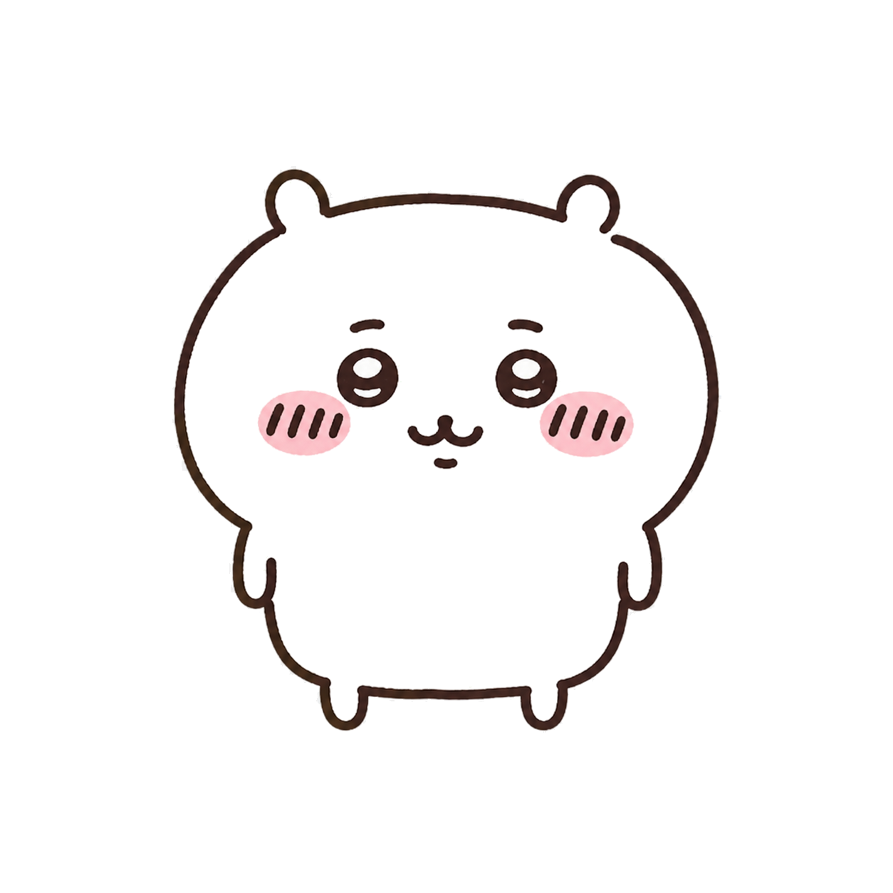
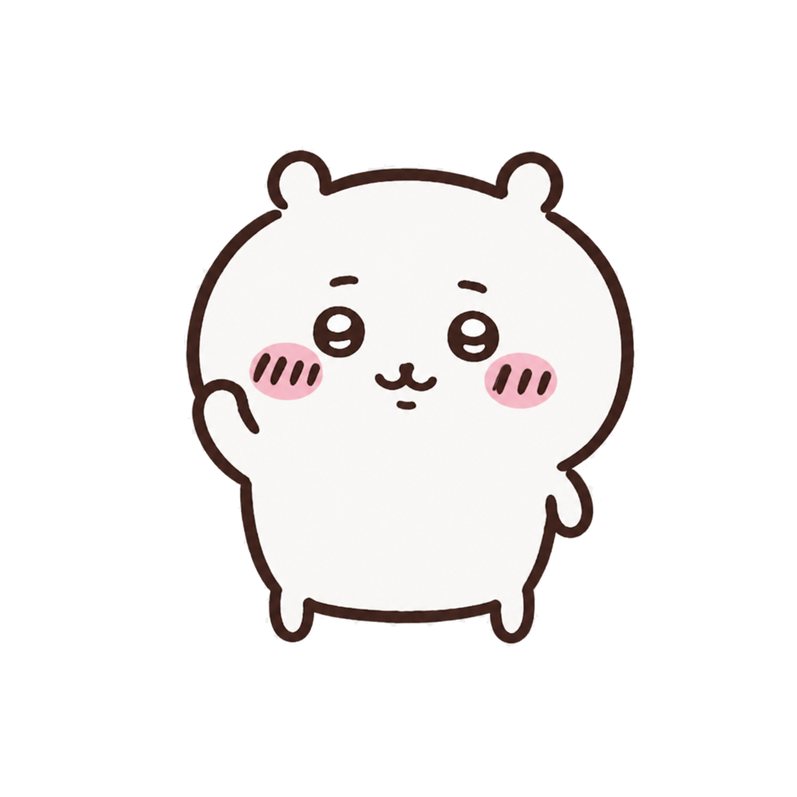
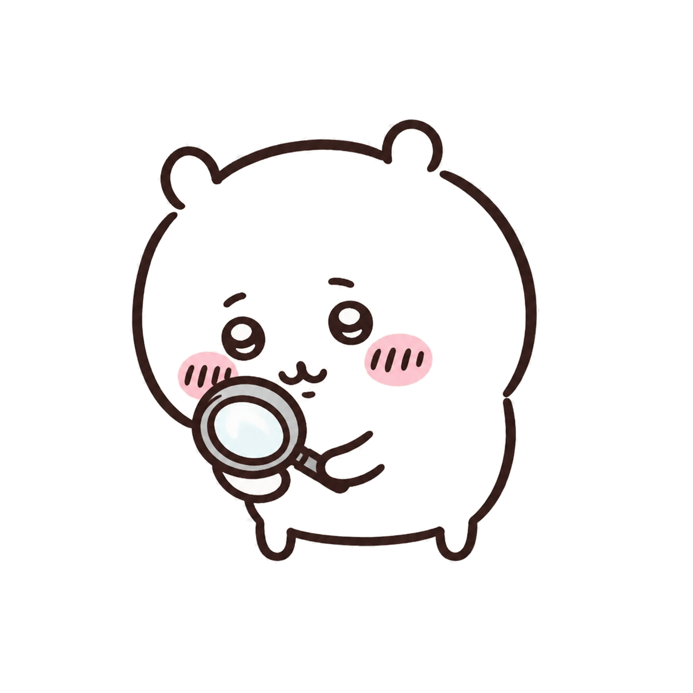
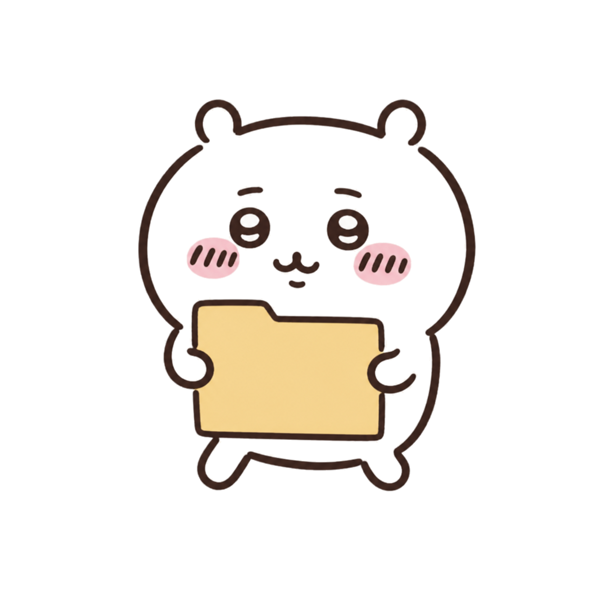

chiikawa-idle.png
transparent character set · visual review
同一个吉伊系角色，拆成 6 张独立 PNG。线条保留轻微手绘抖动，角色和背景完全分离；选择下面的颜色，就能预览它放进不同分区、托盘菜单或快捷方式卡片后的效果。
背景只属于画板，不会写入 PNG 文件

chiikawa-idle.png

chiikawa-wave.png

chiikawa-search.png
chiikawa-read.png

chiikawa-carry-folder.png
chiikawa-organize.png
统一使用深棕色不完全规整的线稿、奶油色角色、粉色腮红和简洁表情，缩小后仍能保持辨识度。
6 个文件均已转换并验证为 RGBA；棋盘格只会在部分图片查看器里作为透明区域的显示方式出现。
确认姿势后，再把 PNG 接到正式 React 图标组件、设置预览、快捷方式栏和系统托盘菜单。